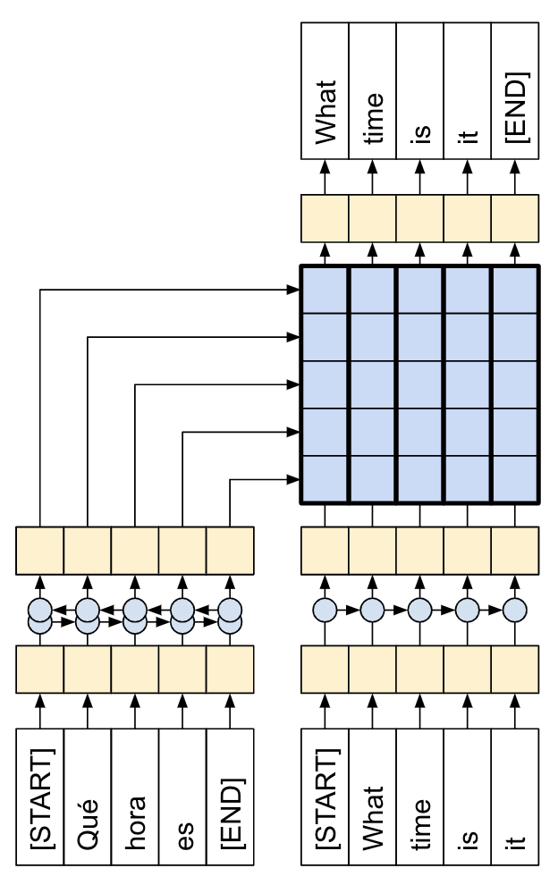
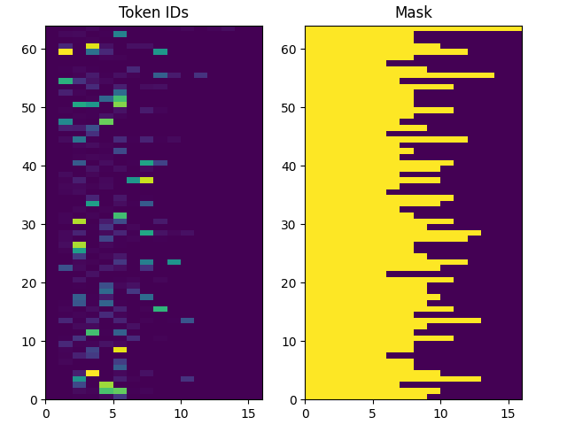
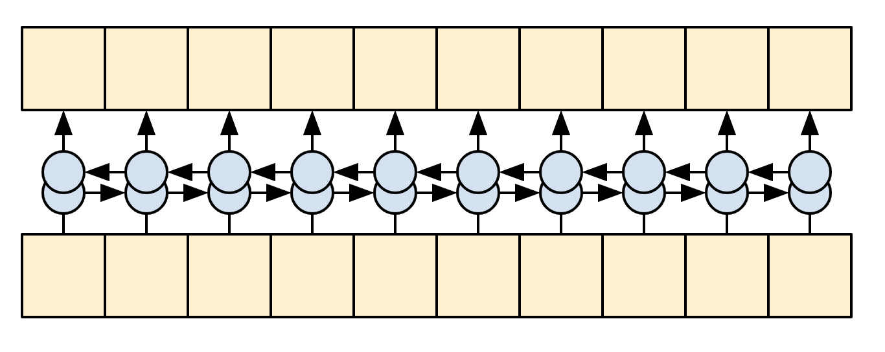
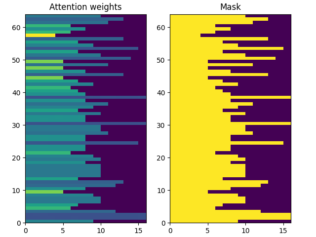

7.3 Seq2Seq 翻译模型
带有注意力的神经机器翻译！
创建日期: 2025-04-10
本教程演示了如何训练一个序列到序列 (Seq2Seq) 的模型，它用于西班牙语到英语的翻译。该模型大致基于论文 Effective Approaches to Attention-based Neural Machine Translation，论文的翻译版本在《深度学习综合指南》的 第 9.3 节 局部注意力，感兴趣的读者可以前往阅读。
上图展示了编码器和解码器通过注意力连接，虽然这种架构有些过时，但它仍然是一个非常有用的项目，可以帮助更深入地理解序列到序列模型和注意力机制（在继续讨论 7.4 Transformer 翻译模型 之前）。
本教程需要有一定的 TensorFlow 基础，理解 Keras 层的概念：
-
直接使用张量；
-
编写自定义的
keras.Model模型和keras.layers.Layer层。
模型训练完成后，我们将能够输入西班牙语句子，例如 "¿todavia estan en casa?"，能够得到英语翻译："are you still at home?"
最终的模型可以使用 tf.saved_model 导出，因此可以在其它 TensorFlow 环境中使用。
对于一个玩具示例来说，翻译质量还算合理，但生成的注意力图可能更有趣。这显示了翻译时输入句子的哪些部分引起了模型的注意：
7.3.1 设置
import unicodedata
import tensorflow as tf
import einops
import pathlib
import keras
import numpy
from matplotlib import pyplot注：因为无法使用 tensorflow-text 库，后续会自定义 normalize_utf8 函数。
本教程使用了大量低级 API，因此很容易出现形状错误。ShapeChecker 类型用于在整个教程中检查形状：
class ShapeChecker():
def __init__(self):
# Keep a cache of every axis-name seen.
self.shapes = {}
def __call__(self, tensor, names, broadcast=False):
if not tf.executing_eagerly():
return
parsed = einops.parse_shape(tensor, names)
for name, new_dim in parsed.items():
old_dim = self.shapes.get(name, None)
if (broadcast and new_dim == 1):
continue
if old_dim is None:
# If the axis name is new, add its length to the cache.
self.shapes[name] = new_dim
continue
if new_dim != old_dim:
raise ValueError(f'Shape mismatch for dimension: {name}\n'
f' found: {new_dim}\n'
f' expected: {old_dim}')7.3.2 数据
语言数据集由 Anki 提供。此数据集包含以下格式的语言翻译对，使用 Tab 键进行分割：
May I borrow this book? ¿Puedo tomar prestado este libro?网站提供多种语言，但此示例使用英语-西班牙语数据集。
7.3.2.1 准备数据集
为方便起见，此数据集的副本托管在 Google Cloud 上，但我们也可以下载自己的副本。下载数据集后，需要按照以下步骤准备数据：
-
为每个句子添加开始和结束标记；
-
通过删除特殊字符来清理句子；
-
创建单词索引和反向单词索引（从单词 -> 数字 和 数字 -> 单词映射的字典）；
-
将每个句子填充至最大长度。
下载文件：
path_to_zip = keras.utils.get_file(
'spa-eng.zip', origin='http://storage.googleapis.com/download.tensorflow.org/data/spa-eng.zip',
extract=True)
# Dir 'spa-eng_extracted/' for some computer.
path_to_file = pathlib.Path(path_to_zip).parent/'spa-eng_extracted/spa-eng/spa.txt'文件路径可能还包括 'spa-eng_extracted/' 。
下载完成之后，进行解析，分成源句子和目标句子：
def load_data(path):
text = path.read_text(encoding='utf-8')
lines = text.splitlines()
pairs = [line.split('\t') for line in lines]
context = numpy.array([context for target, context in pairs])
target = numpy.array([target for target, context in pairs])
return target, context
target_raw, context_raw = load_data(path_to_file)
print('Last context sentence:', context_raw[-1])
print('Last target sentence:', target_raw[-1])输出最后两个句子，说明程序运行正确！
Last context sentence: Si quieres sonar como un hablante nativo, debes estar dispuesto a practicar diciendo la misma frase una y otra vez de la misma manera en que un músico de banjo practica el mismo fraseo una y otra vez hasta que lo puedan tocar correctamente y en el tiempo esperado.
Last target sentence: If you want to sound like a native speaker, you must be willing to practice saying the same sentence over and over in the same way that banjo players practice the same phrase over and over until they can play it correctly and at the desired tempo.7.3.2.2 创建 tf.data
该模型处理的是词汇量有限的多语言文本。因此，标准化 (Standardize) 输入文本非常重要。第一步是 Unicode 规范化，这里使用自定义的 unicode 规范化操作：
def normalize_utf8(text, form='NFKD'):
return unicodedata.normalize(form, text).encode('utf-8') # type: ignore例如我们有个样本 example_text = '¿Todavía está en casa?' # Is he still at home? 分别输出原始语句和经过转换后的语句：
print(tf.constant(example_text).numpy())
print(normalize_utf8(example_text, 'NFKD'))
b'\xc2\xbfTodav\xc3\xada est\xc3\xa1 en casa?'
b'\xc2\xbfTodavi\xcc\x81a esta\xcc\x81 en casa?'将 normalize_utf8 函数应用于 context 之上，并将 context 和 target 转换为 tf.data.Dataset ，以有效地对它们进行打乱和批处理：
context_raw = numpy.vectorize(normalize_utf8)(context_raw)
# print('Last context sentence:', context_raw[-1])
BUFFER_SIZE = len(context_raw)
print(BUFFER_SIZE)
BATCH_SIZE = 64
is_train = numpy.random.uniform(size=(len(target_raw), )) < 0.8
train_raw = (
tf.data.Dataset.from_tensor_slices((context_raw[is_train], target_raw[is_train]))
.shuffle(BUFFER_SIZE)
.batch(BATCH_SIZE, drop_remainder=True))
val_raw = (
tf.data.Dataset.from_tensor_slices((context_raw[~is_train], target_raw[~is_train]))
.shuffle(BUFFER_SIZE)
.batch(BATCH_SIZE, drop_remainder=True))
for example_context_strings, example_target_strings in train_raw.take(1): # type: ignore
print(example_context_strings[:5])
print(example_target_strings[:5])
break查看训练集 context 和 target 前 5 个字符串的输出结果：
tf.Tensor(
[b'No estoy tan interesado como tu\xcc\x81 en la literatura.'
b'\xc2\xbfEres alema\xcc\x81n, o no?'
b'El nin\xcc\x83o le tiro\xcc\x81 una piedra al gato.'
b'E\xcc\x81l respondio\xcc\x81 muy ra\xcc\x81pido a mi carta.'
b'La gente es complicada.'], shape=(5,), dtype=string)
tf.Tensor(
[b'I am not as interested in literature as you.' b"You're German, right?"
b'The child threw a stone at the cat.'
b'He responded very quickly to my letter.' b'People are complicated.'], shape=(5,), dtype=string)7.3.2.3 文本预处理
上一步中进行了 Unicode 字符处理，这里继续进行标准化，通过 tf_lower_and_split_punct 函数，以拆分重音音符并用 ASCII 等效字符替换兼容字符：
def tf_lower_and_split_punct(text):
text = tf.strings.lower(text)
# Keep space, a to z, and select punctuation.
text = tf.strings.regex_replace(text, '[^ a-z.?!,¿]', '')
# Add spaces around punctuation.
text = tf.strings.regex_replace(text, '[.?!,¿]', r' \0 ')
# Strip whitespace.
text = tf.strings.strip(text)
text = tf.strings.join(['[START]', text, '[END]'], separator=' ')
return text上述这个标准化函数将被包裹在 keras.layers.TextVectorization 层中，该层将处理词汇提取和将输入文本转换为标记序列。
TextVectorization 层和其它许多 Keras 预处理层都有个 adapt 方法。此方法读取一个时期的训练数据，其工作原理和 Model.fit 非常相似。adapt 方法根据数据初始化该层，在这里它确定词汇表：
max_vocab_size = 5000
context_text_processor = keras.layers.TextVectorization(
standardize=tf_lower_and_split_punct, # type: ignore
max_tokens=max_vocab_size,
ragged=True)
context_text_processor.adapt(train_raw.map(lambda context, target: context))
# Here are the first 10 words from the vacabulary:
print(context_text_processor.get_vocabulary()[:10])下面输出的是西班牙语的词汇表：
['', '[UNK]', '[START]', '[END]', '.', 'que', 'de', 'el', 'a', 'no']对英语作同样的处理：
target_text_processor = keras.layers.TextVectorization(
standardize=tf_lower_and_split_punct, # type: ignore
max_tokens=max_vocab_size,
ragged=True)
target_text_processor.adapt(train_raw.map(lambda context, target: target))
print(target_text_processor.get_vocabulary()[:10])下面输出英语的词汇表：
['', '[UNK]', '[START]', '[END]', '.', 'the', 'i', 'to', 'you', 'tom']初始化完这些层之后，可以将一批字符串转换为数字标记 (Token ID)：
example_tokens = context_text_processor(example_context_strings)
print(example_tokens[:3, :])
tf.RaggedTensor [[2, 798, 2036, 39, 81, 1379, 5, 54, 44, 4, 3],
[2, 10, 8, 337, 203, 8, 578, 4, 3], [2, 20, 15, 23, 213, 2842, 4, 3]通过 get_vocabulary 方法可以将这些数字标记重新转换为字符串：
context_vocab = numpy.array(context_text_processor.get_vocabulary())
tokens = context_vocab[example_tokens[0].numpy()]
print(' '.join(tokens))
[START] probablemente sere yo quien tendra que hacer eso . [END]返回的数字标记是以 0 填充的，因此很容易转换成掩码：
pyplot.subplot(1, 2, 1)
pyplot.pcolormesh(example_tokens.to_tensor())
pyplot.title('Token IDs')
pyplot.subplot(1, 2, 2)
pyplot.pcolormesh(example_tokens.to_tensor() != 0)
pyplot.title('Mask')
pyplot.subplots_adjust(left=0.08, right=0.92, top=0.94, bottom=0.06)
pyplot.show()展示的图像如下所示：
7.3.2.4 处理数据集
下面的 process_text 函数将数据集字符串转换为数字标记。它同时将 (context, target) 对转换为 ((context, target_in), target_out) 对，用于 Keras.Model.fit 方法。
Keras 希望 (inputs, labels) 输入，因此 inputs 就是 (context, target_in) ，labels 就是 target_out 。target_in 和 target_out 的区别就是向前移动一位，这样就是每个位置的 label 就是下一个数字标记。
def process_text(context, target):
# print('Context type:', type(context))
# print('Context shape:', tf.shape(context))
context = context_text_processor(context).to_tensor()
target = target_text_processor(target)
targ_in = target[:, :-1].to_tensor()
targ_out = target[:, 1:].to_tensor()
return (context, targ_in), targ_out
train_ds = train_raw.map(process_text, tf.data.AUTOTUNE)
val_ds = val_raw.map(process_text, tf.data.AUTOTUNE)
for (ex_context_tok, ex_tar_in), ex_tar_out in train_ds.take(1): # type: ignore
print(ex_context_tok[0, :10])
tokens = numpy.array(context_text_processor.get_vocabulary())[ex_context_tok[0, :10].numpy()]
print(' '.join(tokens))
print(ex_tar_in[0, :10])
tokens = numpy.array(target_text_processor.get_vocabulary())[ex_tar_in[0, :10].numpy()]
print(' '.join(tokens))
print(ex_tar_out[0, :10])
tokens = numpy.array(target_text_processor.get_vocabulary())[ex_tar_out[0, :10].numpy()]
print(' '.join(tokens))下面是第一批中的第一个序列的文本和数字标记对应的样子：
tf.Tensor([ 2 18 1390 8 33 691 4 3 0 0], shape=(10,), dtype=int64)
[START] me levante a las siete . [END]
tf.Tensor([ 2 6 100 63 42 762 4 0 0 0], shape=(10,), dtype=int64)
[START] i got up at seven .
tf.Tensor([ 6 100 63 42 762 4 3 0 0 0], shape=(10,), dtype=int64)
i got up at seven . [END] 7.3.3 编/解码器
下图显示了模型的概览，编码器位于左侧，解码器位于右侧。在每个时间步骤中，解码器的输出与编码器的输出相结合，以预测下一个单词。

注：上述图片来自于论文 Effective Approaches to Attention-based Neural Machine Translation 。
原始的架构包含了一些额外的连接，这些连接被故意从本教程的模型（下图）中省略，因为他们通常是不必要的，而且很难实现。这些缺失的连接是：
-
将状态从编码器的 RNN 馈送到解码器的 RNN ；
-
将注意力输出反馈给 RNN 的输入
7.3.3.1 编码器
编码器的目标是将上下文序列处理成一系列的向量，这些向量对解码器很有用，因为它会尝试预测每个时间步的下一个输出。由于上下文序列是恒定的，因此对信息在编码器中的流动方式没有限制，因此可以使用双向 RNN 进行处理：
编码器做以下几件事情：
-
获取一系列的数字标记 (从
context_text_processor) ； -
查找每个标记的嵌入向量（使用
layers.Embedding） ； -
将嵌入处理成一个新的序列 （使用双向
layers.GRU）； -
返回已经处理好的序列，这将会传递给注意力模块。
class Encoder(keras.layers.Layer):
def __init__(self, text_processor, units):
super(Encoder, self).__init__()
self.text_processor = text_processor
self.vocab_size = text_processor.vocabulary_size()
self.units = units
# The embedding layer converts tokens to vectors.
self.embedding = keras.layers.Embedding(self.vocab_size, units, mask_zero=True)
# The RNN layers processes those vectors sequentially.
self.rnn = keras.layers.Bidirectional(
merge_mode='sum',
layer= keras.layers.GRU(units,
# Return the sequence and state
return_sequences=True,
recurrent_initializer='glorot_uniform'))
def call(self, x):
shape_checker = ShapeChecker()
shape_checker(x, 'batch s')
# 2. The embedding layer looks up the embedding vector for each token.
x = self.embedding(x)
shape_checker(x, 'batch s units')
# 3. The GRU processes the sequence of embeddings.
x = self.rnn(x)
shape_checker(x, 'batch s units')
# 4 Returns the new sequence of embeddings.
return x
def convert_input(self, texts):
texts = tf.convert_to_tensor(texts)
if len(texts.shape) == 0:
texts = tf.convert_to_tensor(texts)[tf.newaxis] # type: ignore
context = self.text_processor(texts).to_tensor()
context = self(context)
return context尝试一下：
UNITS = 256
# Encoder the input sequence.
encoder = Encoder(context_text_processor, UNITS)
ex_context = encoder(ex_context_tok)
print(f'Context tokens, shape (batch, s): {ex_context_tok.shape}')
print(f'Encoder output, shape (batch, s, units): {ex_context.shape}')可以看到 (64, 18)的维度变成 (64, 18, 256) ：
Context tokens, shape (batch, s): (64, 18)
Encoder output, shape (batch, s, units): (64, 18, 256)7.3.3.2 注意力层
注意力层让解码器可以访问编码器提取的信息。它根据整个上下文序列计算出一个向量，并将其添加到解码器的输出中。
从整个序列计算单个向量的最简单方法就是取整个序列的平均值 layers.GloabalAveragePooling1D 。注意力层类似，但计算整个上下文序列的 加权平均值 (Weighted Average) 。其中权重是根据上下文和查询向量的组合计算出来的。
class CrossAttention(keras.layers.Layer):
def __init__(self, units, **kwargs):
super().__init__()
self.mha = keras.layers.MultiHeadAttention(key_dim=units, num_heads=1, **kwargs)
self.layernorm = keras.layers.LayerNormalization()
self.add = keras.layers.Add()
def call(self, x, context):
shape_checker = ShapeChecker()
shape_checker(x, 'batch t units')
shape_checker(context, 'batch s units')
attn_output, attn_scores = self.mha(
query=x,
value=context,
return_attention_scores=True)
shape_checker(x, 'batch t units')
shape_checker(attn_scores, 'batch heads t s')
# Cache the attention scores for plotting later.
attn_scores = tf.reduce_mean(attn_scores, axis=1)
shape_checker(attn_scores, 'batch t s')
self.last_attention_weights = attn_scores
x = self.add([x, attn_output])
x = self.layernorm(x)
return xattention_layer = CrossAttention(UNITS)
# Attend to the encoded tokens.
embed = keras.layers.Embedding(target_text_processor.vocabulary_size(),
output_dim=UNITS, mask_zero=True)
ex_tar_embed = embed(ex_tar_in)
result = attention_layer(ex_tar_embed, ex_context)
print(f'Context sequence, shape (batch, s, units): {ex_context.shape}')
print(f'Target sequence, shape (batch, t, units): {ex_tar_embed.shape}')
print(f'Attention result, shape (batch, t, units): {result.shape}')
print(f'Attention weights, shape (batch, t, s): {attention_layer.last_attention_weights.shape}')上述代码的输入，注意 s 和 t 的长度大小是不一致的：
Context sequence, shape (batch, s, units): (64, 18, 256)
Target sequence, shape (batch, t, units): (64, 16, 256)
Attention result, shape (batch, t, units): (64, 16, 256)
Attention weights, shape (batch, t, s): (64, 16, 18)在每个目标序列的位置，通过上下文序列注意力权重相加都为 1：
print(attention_layer.last_attention_weights[0].numpy().sum(axis=-1))
[1. 1. 1. 1. 0.99999994 1.
1. 1. 1. 1. 1. 1.
1. 1. 1. 1. ]由于初始化时随机性较小，注意力权重最初都接近于 1/(sequence_length) 。随着训练的进行，模型将学会让这些权重变得不那么统一。
attention_weights = attention_layer.last_attention_weights
mask = (ex_context_tok != 0).numpy() # type: ignore
pyplot.subplot(1, 2, 1)
pyplot.pcolormesh(mask*attention_weights[:, 0, :])
pyplot.title('Attention weights')
pyplot.subplot(1, 2, 2)
pyplot.pcolormesh(mask)
pyplot.title('Mask')
pyplot.subplots_adjust(left=0.08, right=0.92, top=0.94, bottom=0.06)
pyplot.show()上下文序列的注意权重 t = 0 时：
7.3.3.3 解码器
解码器的工作是针对目标序列中每个位置的下一个标记生成预测：
-
它查找目标序列中每个标记的嵌入；
-
使用 RNN 来处理目标序列，并跟踪迄今为止生成的内容；
-
在关注编码器的输出时，它使用 RNN 输出作为注意层的查询；
-
它会在输出的每个位置预测下一个标记。
在训练时，模型会预测每个位置的下一个单词。因此，信息在模型中只朝一个方向流动非常重要。解码器使用单向（而非双向）RNN 来处理目标序列。
当使用该模型进行推理时，它每次会生成一个单词，然后这些单词会反馈到模型中。
以下是 Decoder 类的初始化程序，初始化程序创建了所有必要的层：